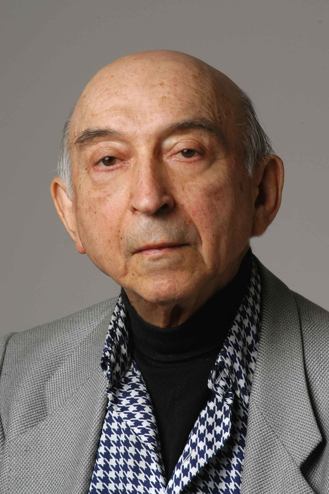

Lotfi A. Zadeh
1921-2017
One of the Greatest Scientists of the World
Lotfi Aliasker Zadeh (/ˈzɑːdeɪ/; Azerbaijani: Lütfi Rəhim oğlu Ələsgərzadə; Persian: لطفی علیعسکرزاده;
February 4, 1921 – September 6, 2017) was a mathematician, computer scientist, electrical engineer, artificial
intelligence researcher and professor emeritus of computer science at the University of California, Berkeley.

Portrait of Lotfi A. Zadeh
Time Line of Lotfi A. Zadeh
- 1921 - He was born in Baku, Azerbaijan SSSR.
- 1931 - With his family, he moved to Tehran.
- 1942 - He gaduated from the University of Tehran with a degree in electrical engineering.
- 1943 - He emigrated to the US.
- 1944 - Zadeh entered the MIT.
- 1946 - Zadeh graduated from the MIT with an MS degree in electrical engineering.
- 1949 - He received Ph.D in electrical engineering from Columbia University.
- 1950 - Zadeh started working as an assistant professor at Columbia University.
- 1957 - He was promoted to Full Professor at Columbia University.
- 1959 - He started teaching at the University of Berkeley.
- 1965 - Zadeh published his seminal work on fuzzy sets.
- 1973 - Zadeh proposed his theory of fuzzy logic.
- 1976 - He received Eringen Medal.
- 1995 - He received IEEE Medal of Honor for pioneering development of fuzzy logic and its many diverse applications.
- 2001 - He received ACM Allen Newell Award.
- 2017 - Lotfi A. Zadeh died at the age of 96 on September 6. He is buried in the first Alley of Honor in Baku, Azerbaijan, the city in which he was born.
Note:Above-mentioned are just only a small part of Lotfi A. Zadeh's achievemenets.
Read more about Lotfi A. Zadeh on Wikipedia
Back to Top
This website is coded by Mammad Mammadov